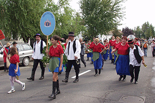
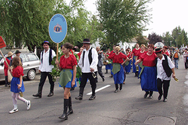

informácie o projekte

Tokajská vínna cesta vychádza z histórie veľkých obchodných ciest v Európe.
V súčasnosti ponúka možnosť zoznámiť sa priamo vo vinohradníckej oblasti Tokaj s históriou,
technológiou pestovania hrozna priamo vo vinohradoch a výrobou tokajského vína v stredovekých pivniciach.
Zážitok s návštevy a poznania sa precíti ochutnávkami vína a regionálnych špecialít.
Jej obohatením je miestny folklór, kultúrne podujatia, festivaly a návštevy historických pamiatok.
Návšteva vinohradníckej oblasti Tokaj so stredovekými vinnými pivnicami, kde možno ochutnať v tej najlepšej
atmosfére tokajské vína dozrievajúce v drevených dubových sudoch niekoľko rokov je zážitkom, na ktorý sa nezabúda.
Projekt s oficiálnym názvom Rozvoj spolupráce partnerských miest na historickej Tokajskej vinnej ceste bol schválený Spoločným monitorovacím výborom pre program cezhraničnej spolupráce Maďarská republika – Slovenská republika dňa 26. apríla 2012.Projekt je financovaný: 85% z ERDF, 10% zo štátneho rozpočtu a 5% z vlastných zdrojov.
Akronym (skrátený názov):
Tokajská vínna cesta / Tokaji Borút
Názov projektu:
Rozvoj spolupráce partnerských miest na historickej Tokajskej vinnej ceste HUSK/1101/1.3.1/0117
Kód projektu:
Program cezhraničnej spolupráce Maďarská republika – Slovenská republika 2007
Operačný program:
- 2013
Prioritná os:
1. Hospodárstvo a spoločnosť
Oblasť podpory:
1. 3 Rozvoj spoločného turizmu
Opatrenie:
1.3.1 Spoločný rozvoj produktov turizmu, atrakcií, organizácií destilačného manažmentu a súvisiacej infraštruktúry
Celkový projektový rozpočet:
497 552,48.- EUR
Schválený rozpočet pre mesto Košice:
165 302,50.- EUR
Rozpočet pre mesto Abaújszántó:
282 249,98.- EUR
Rozpočet pre Župné mesto Miskolc:
50 000.- EUR
Začiatok implementácie projektu:
1. októbra 2012
Koniec projektových aktivít:
30. septembra 2014
 
